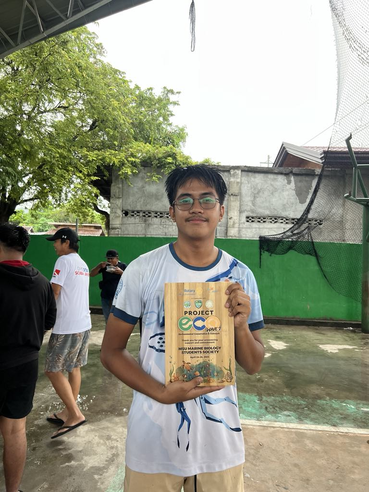

Meet the Coral Council
Ahoy there! We are a trio of passionate marine biology students who go by the name The Coral Council — a small crew with big dreams and saltwater in our veins. United by curiosity and a love for ocean life, we’ve dedicated ourselves to exploring the deep, protecting marine ecosystems, and sharing the wonders of the sea with anyone willing to dive in with us.
Whether it's decoding dolphin chatter, documenting coral bleaching, or just geeking out over plankton under a microscope, we bring our unique strengths together to make waves in and out of the classroom.
From tidepool talks to research dives, every adventure fuels our mission to better understand the ocean — and inspire others to care for it too. So come aboard and get to know us, starting with Dr. Stephen Louise Escanilla and the rest of our salty crew — together, we are The Coral Council!
Dive into the Unkown
Beneath the shimmer of the waves lies a world bursting with wonder — a living tapestry of color, movement, and mystery. Marine Biology is your compass to this hidden realm, where glowing jellyfish drift like lanterns, coral reefs hum with life, and ancient sea creatures still roam the depths.
As a marine biologist in the making, you won’t just study the ocean — you’ll listen to its rhythms, protect its fragile beauty, and unlock its secrets one discovery at a time. So take a deep breath, grab your curiosity, and dive in the ocean is waiting for you.
Marine Biodiversity and Species Discovery
Coral Reef Conservation
Ocean Pollution and Its Impact on Marine Life
Bachelor of Science in Marine Biology
What is BS in Marine Biology?
A Bachelor of Science in Marine Biology is an undergraduate degree focused on the study of marine life and ocean ecosystems. It combines biology, oceanography, ecology, chemistry, and environmental science to explore the rich diversity of organisms that inhabit our seas — from microscopic plankton to massive whales, and everything in between. Students in this program gain hands-on experience through lab work, field research, and even dives into coastal or deep-sea environments.
Why is Marine Biology Important?
The ocean covers over 70% of our planet, supports nearly all life on Earth, and plays a crucial role in regulating climate, producing oxygen, and feeding billions of people. Studying marine biology is essential because:
It helps us understand and protect marine ecosystems threatened by pollution, climate change, and overfishing.
It contributes to medical and scientific discoveries, such as new antibiotics or sustainable food sources.
It deepens our understanding of Earth’s climate systems and how human activity affects them. In short: Marine biology is at the heart of ocean conservation and the health of our planet.
Why BS in Marine Biology?

Dr. Stephen Louise: First and foremost, we've always been interested in animals—whether they live on land, in water, or in the sky. I’ve been eager to understand the environments they inhabit. When it came time to choose a program, I was initially more familiar with BS biology than with marine biology specifically. But as I explored further, I discovered that marine biology goes beyond just studying marine animals—it also covers environmental aspects, conservation, and ecosystem dynamics. This broader perspective, combined with our passion, we are inspired to go with this program
Engr. Fawzan Alsaber: From a young age, I’ve always been fascinated by the diversity of life around us—whether it’s creatures roaming the forests, thriving in rivers and oceans, or soaring through the skies. I wanted to dive deeper into understanding the unique habitats these animals call home. Initially, I was more acquainted with general biology programs, but as I learned more about marine biology, I realized it’s much more than just studying sea creatures. It encompasses the health of entire ecosystems, the impact of human activities, and the importance of preserving delicate marine environments. This comprehensive approach, combined with my genuine enthusiasm for nature, motivated me to pursue marine biology as my chosen field of study.

Dr. Josua Jadraque: I’ve always been drawn to the natural world, fascinated by the incredible variety of animals that inhabit every corner of the Earth—on land, in the oceans, and up in the air. My curiosity about how these creatures survive and interact with their environments grew stronger over time. While I initially leaned toward a general biology path, exploring marine biology opened my eyes to its wider scope. It’s not just about the animals themselves, but also about understanding marine ecosystems, addressing environmental challenges, and promoting conservation efforts. This holistic view, combined with my passion for wildlife, inspired me to commit to studying marine biology.
Explore the Digital Reef
Welcome to the Digital Reef — a vibrant hub where science, stories, and creativity come to life! Dive into a colorful ecosystem of media content, from ocean documentaries and faculty features to behind-the-scenes dev moments and quirky sea-worthy memes.
Just like a real reef, this space is full of surprises — rich with knowledge, teeming with inspiration, and always evolving. So swim around, click through, and discover the pulse of our marine-minded community, one byte at a time.